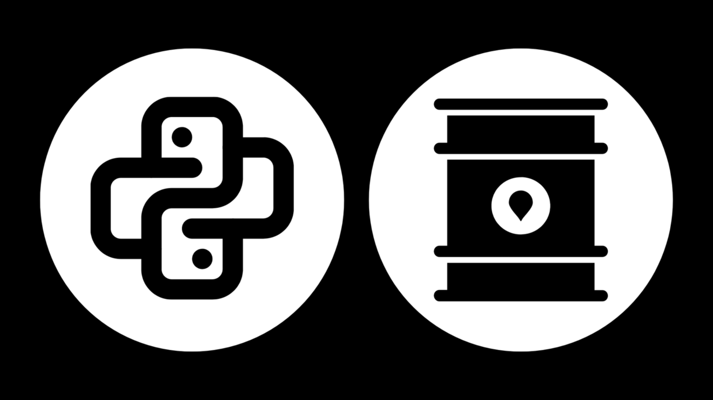

Welcome to PyTank

A tool for estimating the original volume of oil in reserves by using an object-oriented programming approach (POO).
For full documentation visit PyTank.


Getting Started
Learn how to get started with PyTank and its basic features.
User Guide
Detailed documentation for users on how to use the project.
API Reference
Consult the API documentation to understand the available functions and classes.
Developer Guide
Guide for developers on how to contribute to the project.
"One tool for the development of these programs is Python, a very high-level object-oriented." - Martínez Rafael et al., 2014